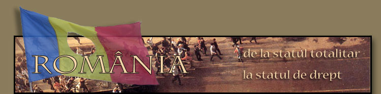

|  | ||
|
|
II. Evoluţia societăţii civile româneştiImpunerea comunismului a găsit România în mijlocul unui plin proces de dezvoltare a societăţii civile, proces inaugurat înca din cea de-a doua jumătate a secolului trecut, o dată cu începutul procesului de modernizare politică şi instituţională a ţării. Grupate, în principal, în jurul unor nume cunoscute ale intelectualităţii sau al unor persoane cu putere financiară, în ţara funcţionau în mod liber o seamă de asociaţii şi fundaţii având destinaţii diferite, puse în slujba modernizării şi progresului societăţii româneşti. Exemple sunt Fundaţia lui Jacques Elias, care a girat averea lasată moştenire de catre acesta şi fundaţia Dalles care a devenit un punct de reper pe harta culturală a Capitalei în perioada interbelică.
Comunizarea României a condus în mod direct la naţionalizarea tuturor acestor fundaţii şi a proprietăţilor lor. Societatea civilă românească însăşi a fost anihilată, deoarece reprezenta, din perspectiva autorităţilor, a ameninţare la adresa regimului de democraţie populară. O dată cu instaurarea regimului de tip stalinist, în România – ca şi în celelalte tari est-europene – nu se mai poate vorbi propriu-zis nici despre o societate civilă şi nici despre un stat de drept. Politizarea tuturor instituţiilor statului, inclusiv a aparatului de justiţie, a dus la acumularea treptată a tuturor pârghiilor puterii în mâinile regimului comunist. În pararel, organele coercitive ale statului, şi ele pe deplin politizate, prin încălcarea constantă a drepturilor omului, întreţin un control direct şi total asupra societătii, izolând şi anihilând prin diferite mijloace eventualii contestatari ai regimului.
În mod aparent, în anii ’60, odată cu apariţia unor semne ale liberalizării regimului politic de la Bucuresti, se fac simţite şi semnele unei relaxări ideologice. În principal cultura şi arta, deşi în continuare controlate de regim, au profitat de pe urma acestei deschideri evidente către lumea liberă. În ciuda unor minime libertăţi câştigate de cetăţeni, această liberalizare a fost totuşi prea limitată pentru a permite reapariţia unei autentice societăţi civile. În anul 1970, mai mulţi factori au alimentat atât apariţia dizidenţilor, cât şi conturarea unor nemulţumiri generalizate la oamenii de rând, dar şi la elita comunistă. Este vorba despre semnarea acordurilor de la Helsinki privind drepturile omului (1975), care permit ţărilor occidentale să aibă calitatea de observatori în această problemă, chiar în România, şi de instalarea “socialismului dinastic”, prin care întreaga familie Ceauşescu ocupă posturi-cheie în ierarhia de partid şi de stat. Toate acestea sunt grefate pe eşecul economic al sistemului şi pe scăderea drastică a nivelului de trai până la raţionalizarea pâinii şi a altor alimente de bază, reducerea cotei de energie termică şi electrică, a gazului metan pentru consumul casnic etc. Planurile cincinale, cu indicatori tot mai ridicaţi, nu sunt îndeplinite, iar aceasta periclitează calitatea vieţii în România. asdfasdfasdfasdf adsf adsf adf sdf afd |
|
|
|
||